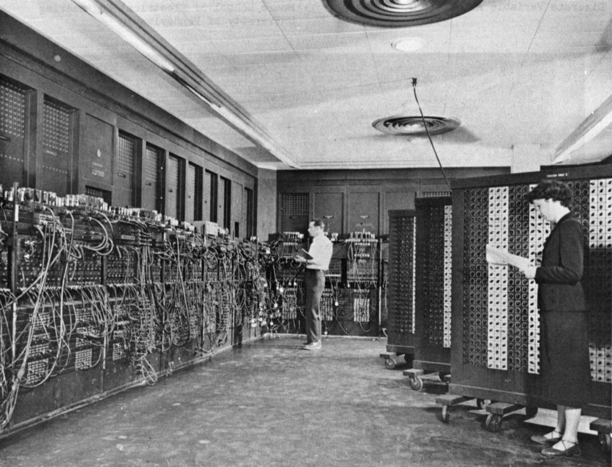
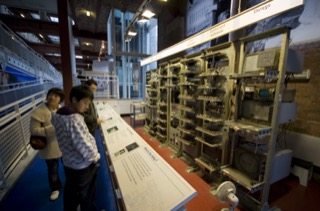

Von Neumann Architecture
Every int x = 5; you wrote in Part 1 ended up as a number in a numbered
memory cell, and every line of C++ ended up as numbers too. This chapter opens the
machine: memory, CPU and I/O, the idea that program and data live
together, and the fetch–decode–execute cycle that runs it all. You will
step a toy computer one register transfer at a time.
A computer is a machine that runs numbers it finds in memory

7.1Hardware, software, and a stack of abstraction layers
A computer system has two inseparable halves. Hardware is the physical part you could touch: the processor, memory modules, storage, input/output devices and the wires (buses) between them. Software is the programs that tell that hardware what to do. What makes a modern computer special is that it is programmable: the same box behaves like a calculator, a game console or a web server depending only on the program it is given.
Nobody understands all of it at once, so we look at it in layers. Each layer offers a clean interface to the one above it and hides everything below. You wrote C++ in Part 1 without knowing how a transistor works — that is the abstraction at work.
| Generation | Years | Technology | Examples |
|---|---|---|---|
| 1st | 1940–1955 | vacuum tubes | ENIAC, EDVAC |
| 2nd | 1955–1965 | transistors | IBM 1401, UNIVAC |
| 3rd | 1965–1980 | integrated circuits | IBM System/360 |
| 4th | 1980–today | VLSI chips | Intel x86, ARM, RISC-V |
Table: generations of computers by technology (textbook Table 1.1). The design you are about to learn is the one thing that stayed the same through all four.
7.2The big idea of 1945
ENIAC, finished in 1945 at the University of Pennsylvania, could do roughly 5,000 additions per second — astonishing at the time. But it was “programmed” by physically rewiring cables and switches, which could take days or even weeks for each new problem. That pain motivated the stored-program computer. In 1945 the mathematician John von Neumann wrote First Draft of a Report on the EDVAC, the first complete, buildable description of the idea; the name “Von Neumann architecture” comes from it, even though Eckert, Mauchly and others contributed too, and Alan Turing had laid the theory in 1936.

The EDVAC (delivered 1949) was designed from the start around the stored program, and the Cambridge EDSAC (1949) is usually called the first practical stored-program machine. The lecture slide that shows EDVAC 1949, the IBM PC 1981, the PlayStation 2 (2000) and the iPhone (2025) makes the point: the same basic design, 76 years on.
7.3Four subsystems and three principles
The Von Neumann model splits the computer into four subsystems: the memory, the arithmetic/logic unit (ALU), the control unit (CU) and the input/output (I/O) system. ALU and control unit together are the CPU; in modern chips they sit on one piece of silicon.
The model rests on three principles, which support each other:
- Decomposition — the machine is the four cooperating subsystems above.
- Stored program — instructions and data are both binary numbers, kept in the same addressable memory.
- Sequential execution — instructions run one after another, unless a branch or jump changes the flow.
7.4The CPU: control unit and ALU
The control unit does no arithmetic. It fetches instructions, decodes them, and sends signals to wake up the ALU, memory and I/O. Three parts matter:
| Part | What it holds or does |
|---|---|
| PC program counter | the memory address of the next instruction to fetch; jumps overwrite it |
| IR instruction register | the instruction just fetched, kept while it is decoded and executed |
| Decoder | circuitry that reads the opcode in IR and activates the right circuits |
| ALU | arithmetic (+ − × ÷) and logic (< = >, AND, OR, NOT) on values held in registers |
| Registers | very fast cells inside the CPU for operands and intermediate results |
| Condition codes | a special register recording the outcome of a comparison (GT, EQ, LT) for later jumps |
Link to C++: every if (a < b) ends up as “compare, set the condition
codes, jump or don't” — the condition codes are where the answer waits between the two
instructions. Chapter 8 shows exactly how.
7.5Memory: cells, addresses, fetch and store
Memory is a long row of identically sized cells, each with a number — its
address — starting from 0. Keep the two apart: the address says
where the cell is, the content is what it holds. A cell is the smallest thing you
can read or write, normally one byte (8 bits), and every cell takes the same time to
access (that is the “random” in RAM). Link to C++: your int x = 5; is
just a name for a cell (or a few cells) holding the number 5 — Chapter 5 and
S6 showed arrays as neighbouring cells.
With an N-bit address there are 2N cells (addresses 0 to 2N−1): 16 address bits → 65,536 cells; 32 bits → about 4.29 billion bytes (4 GB); 30 bits → 230 = 1,073,741,824 bytes = 1 GB.
| Operation | Steps | Effect on the cell |
|---|---|---|
| Fetch(address) | address → MAR; memory copies that cell into MDR | non-destructive: a copy is read |
| Store(address, value) | address → MAR; value → MDR; memory writes MDR into the cell | destructive: the old value is overwritten |
MAR (memory address register) and MDR (memory data register) are the only doorway between CPU and memory, plus a fetch/store signal.
The memory hierarchy
Fast memory is expensive and small; big memory is cheap and slow. So computers use a hierarchy, with the registers on top:
| Level | Technology | Typical size | Access time | Volatile? |
|---|---|---|---|---|
| Registers | flip-flops on the chip | < 1 KB | < 1 ns | yes |
| Cache L1 | SRAM on the chip | 32–64 KB per core | 1–4 ns | yes |
| Cache L2 | SRAM on the chip | 256 KB–1 MB per core | 3–10 ns | yes |
| Cache L3 | SRAM, shared | 8–32 MB | 10–20 ns | yes |
| RAM | DRAM | 8–128 GB | 50–82 ns | yes |
| SSD | flash | 256 GB–4 TB | 0.1–1 ms | no |
| HDD | magnetic disk | 1–20 TB | 5–15 ms | no |
Table: textbook Table 1.2. “Volatile” means the content disappears when the power goes off — which is why a file must be written to a disk to survive. A cache keeps recently used data close to the CPU because programs behave predictably: temporal locality (an address used now is likely to be used again soon — a loop variable) and spatial locality (its neighbours are likely next — walking through an array). A cache therefore loads whole blocks (typically 64 bytes). A hit is served at once; a miss must wait for the slower level.
7.6Input/output: slow devices and the controllers that hide it
The I/O system connects the machine to the world. Communication devices (keyboard, mouse, screen, network) and storage devices (hard disk, SSD, optical disc, tape). The slides also split storage by access method: direct access (disks) versus sequential access (tape, used for backups).
The catch is speed. RAM answers in about 50 ns; a hard disk needs about 10 ms. That is 10 ms ÷ 50 ns = 200,000 times slower (flash SSDs are far faster than that, but still far slower than RAM). A CPU that waited for every disk operation would idle almost all the time. The fix is an I/O controller: a small special-purpose processor with its own buffer that runs the device. The CPU starts the job and carries on with other instructions; when the transfer is done the controller sends an interrupt that makes the CPU run a short interrupt service routine. With DMA (direct memory access) the data moves between RAM and the controller's buffer without going through the CPU at all.
Link to C++: when your program executes cin >> x, the keystroke
arrives through exactly this path. In the toy machine of the lab, the IN and
OUT instructions play the role of that I/O system.
7.7What “stored program” makes possible
Because instructions are just numbers in memory, a program can be handled like data: loaded from disk, copied, changed, even produced by another program. That one decision has four huge consequences (textbook §1.5.1):
- The operating system is just a program that manages other programs, loaded and run like any other.
- The compiler reads your source code (data) and writes machine code (also data) into memory — Chapter 8.
- Self-modifying code: a program can overwrite its own instructions while running. The lab has a preset that does exactly this.
- The whole software industry — languages, libraries, apps — rests on treating programs as data.
The idea is older than the hardware: Turing's 1936 “universal machine” read its instructions from a tape, and Babbage's Analytical Engine was designed in a similar spirit.
The caches of 7.5 exist largely to ease this bottleneck.
7.8The fetch–decode–execute cycle
The control unit does one thing, forever: fetch the next instruction,
decode it, execute it — until a HALT. To start a
program, PC is set to the address of its first instruction. Here is one full cycle in terms
of registers (slides 31–33):
| Phase | Micro-step | What happens |
|---|---|---|
| Fetch | PC → MAR | the address of the next instruction goes to the memory address register |
| fetch signal | memory copies that cell into MDR | |
| MDR → IR | the instruction is parked in the instruction register | |
| PC + 1 → PC | PC now points to the following instruction | |
| Decode | IR → decoder | the opcode is read; the decoder raises the signals for that instruction |
| Execute | depends on opcode | e.g. LOAD X: IR.address → MAR; fetch signal; MDR → R |
Slide 33 leaves ADD X “as an exercise”. Here it is: IR.address → MAR;
fetch signal (the value goes to MDR); ALU: R + MDR → R. A JUMP X is
even shorter: IR.address → PC, so the next fetch comes from X. A conditional
jump does that only if the condition codes say so; otherwise PC just keeps counting.
7.9Machine instructions, the instruction set — and RISC vs CISC
A machine-language instruction is a binary word with an
opcode (which operation) and one or more address fields
(which cells). With a k-bit opcode you can have at most 2k different operations.
Slide 23's example ADD X, Y (opcode 9, X = 99, Y = 100) is a 40-bit instruction:
00001001 | 0000000001100011 | 0000000001100100 — 8 + 16 + 16 bits.
The lecturer's toy machine (slide 34) keeps things smaller: a 4-bit opcode followed by one address, and a single working register R (the accumulator). With 16 memory cells the address is 4 bits, so every instruction is exactly 8 bits. It has 16 instructions:
| Opcode | Instruction | Meaning |
|---|---|---|
| 0000 | LOAD X | CON(X) → R |
| 0001 | STORE X | R → CON(X) |
| 0010 | CLEAR X | 0 → CON(X) |
| 0011 | ADD X | R + CON(X) → R |
| 0100 | INCREMENT X | CON(X) + 1 → CON(X) |
| 0101 | SUBTRACT X | R − CON(X) → R |
| 0110 | DECREMENT X | CON(X) − 1 → CON(X) |
| 0111 | COMPARE X | GT = 1 if CON(X) > R; EQ = 1 if equal; LT = 1 if CON(X) < R |
| 1000 | JUMP X | next instruction from X |
| 1001 | JUMPGT X | jump to X if GT = 1 |
| 1010 · 1011 · 1100 | JUMPLT · JUMPEQ · JUMPNEQ | jump if LT = 1 · if EQ = 1 · if EQ = 0 |
| 1101 | IN X | read an integer, store it in X |
| 1110 | OUT X | print CON(X) in decimal |
| 1111 | HALT | stop |
JUMPxx family
as “…”; the table above fills them in the slide's own order. And slide 27 lists JUMPGE
and JUMPLE, which do not fit: four opcode bits allow only 16 instructions. In the lab the
assembler accepts them as shortcuts for two jumps (GT-or-EQ, LT-or-EQ). Finally, slide 26's
two-operand COMPARE X, Y is replaced on slide 34 by COMPARE X, which
compares cell X with R; we follow slide 34.
Real instruction sets look like this too, just bigger. The textbook shows the 16-bit
teaching machine LC-3: a 4-bit opcode (16 opcodes in all, one reserved) and fields for
registers. ADD R1, R2, R3 is the word 0001 001 010 000 011 (hex 1283).
Two design philosophies
| Criterion | RISC (ARM, RISC-V, MIPS) | CISC (x86) |
|---|---|---|
| Idea | few, simple instructions; less circuitry | many, richer instructions; each does more |
| Instruction length | fixed (often 32-bit) | variable (1–15 bytes on x86) |
| Memory access | only load/store touch memory; ALU works on registers | ALU instructions may use memory operands |
| Code size | larger | denser |
| Typical use | phones, embedded devices, many servers | PCs, servers, games |
Table: textbook Table 1.4 (condensed). Neither is simply “faster”: performance depends on the compiler, the microarchitecture, the memory system and the workload. A modern x86 chip even translates its CISC instructions into RISC-like micro-ops internally. The iPhone in the lecture's first slide runs ARM, the PC in the same slide runs x86 — one architecture idea, two instruction sets.
Von Neumann Machine
This is the lecturer's toy computer (slide 34) simulated in your browser. It is a teaching model, not a real CPU: 16 memory cells, one accumulator R, the 16 instructions above. Pick a preset, press Micro-step and watch the highlighted registers — amber is where a value comes from, teal is where it goes.
5 is the bit pattern
0000 0101, which reads as the instruction LOAD 5 — the hardware cannot tell data from
instructions by looking at the bits; only the PC decides what gets executed. Edit any cell by typing in its box.
Chapter 7 quiz
28 questions — components and roles, memory arithmetic, traces of the fetch–decode–execute cycle, and the reasoning behind the design.
Exercises
Paper questions in the style of the textbook's review questions, plus tasks to do in the lab. Every number in the model answers was checked by running the engine.
Follow one keystroke
Teams of 3–4 · one class period to prepare · a 5-minute presentation. Counts toward the class-activities 10%.
The task
You press a key while your C++ program is waiting at cin >> x; and, a moment
later, the character appears on screen. Trace that journey through the four
subsystems and produce a one-page diagram plus a numbered list of events, from the keyboard
to the screen, naming which component acts at each step.
Constraints
- Use at least these words correctly: I/O controller, interrupt, memory cell with its address, MAR, MDR, PC, IR, ALU.
- Show where the CPU is not waiting (why the keyboard cannot slow it down), and use the speed gap of 7.6 with a number.
- Mark which steps in your list happen in a fetch–decode–execute cycle of your program and which happen in the interrupt service routine.
- Finish with one sentence: which step would be the bottleneck for a program that reads a million numbers from a disk, and why.
Roles
| Role | Responsibility |
|---|---|
| Hardware architect | draws the block diagram and labels buses and subsystems |
| Cycle tracer | writes the fetch–decode–execute micro-steps for the instruction that follows the interrupt |
| Skeptic | challenges every arrow: “who started this? who was waiting?” |
| Presenter | tells the story in five minutes, with the diagram |
Further reading
Wikipedia — Von Neumann architecture
History, the shared bus and the bottleneck, and how the model compares with Harvard designs.
HistoryWikipedia — First Draft of a Report on the EDVAC
The 1945 document that started it all, and the debate over who deserves the credit.
HistoryWikipedia — Manchester Baby
The first electronic stored-program computer, and what its first program did.
ReferenceWikipedia — Instruction cycle
The fetch–decode–execute cycle in more detail, including how real CPUs vary it.
Related toyWikipedia — Little man computer
Another famous teaching computer with a tiny instruction set, like the one in this chapter's lab.
Build itBen Eater — Build an 8-bit computer from scratch
Videos that build a working fetch–decode–execute machine out of logic chips on breadboards.
CourseNand to Tetris
Build a computer from logic gates up to a running program — this chapter's layers, made hands-on.
Deep diveUlrich Drepper — What every programmer should know about memory
Caches, locality and why memory is the bottleneck, written for programmers (advanced).
Classic paperJohn Backus — Can programming be liberated from the von Neumann style? (1977)
The Turing Award lecture that named the Von Neumann bottleneck.